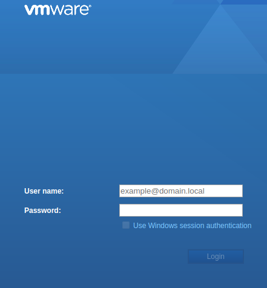
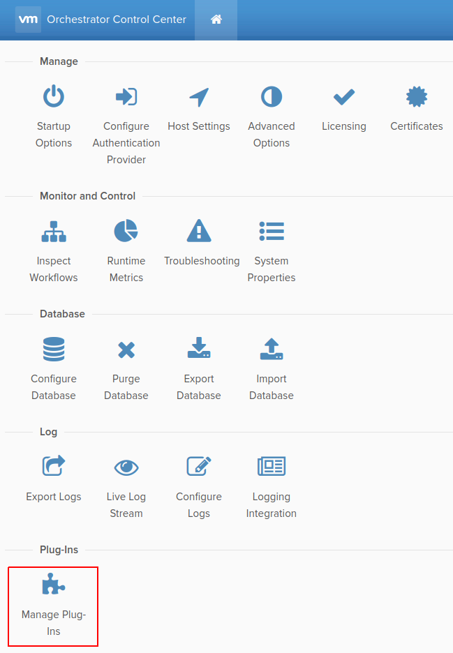

Installing and Provisioning Contrail VMware vRealize Orchestrator
Plugin A dedicated Contrail plugin is used to connect to VMware
vRealize Orchestrator (vRO). Contrail Release 5.0 supported a Beta
version of the plugin. Starting with Contrail Release 5.1, a fully
supported version of the plugin is available.
You must install the Contrail VMware vRealize Orchestrator (vRO)
plugin to connect to the vRO server.
Before you begin installation, ensure the following:
You have administrator-level access to the Control Center
of a deployed vRO appliance.
You know the host name ({vRO} ) of
the deployed vRO Appliance.
You have the login credentials of the vCenter SSO service.
You have downloaded the vRO plugin package file to your
local system.
You can download the plugin from https://www.juniper.net/support/downloads/?p=contrail .
You can deploy the Contrail plugin in any Java Virtual Machine
(JVM) compatible environment and load it on an active vRO instance.
The following topics describe how to install
and provision the Contrail vRO plugin.
Accessing vRO Control Center Follow the steps given below to access and log in to
vRO Control Center:
To access vRO Control Center through a Web browser, navigate
to the https://{vRO}:8283/vco-controlcenter URL.
Note Replace {vRO} given in the URL with
the host name of the deployed vRO Appliance.
The host name is the IP address or the
FQDN of the vRO node.
The vCenter SSO service page is displayed.
Figure 1: vCenter SSO service page 
On the vCenter SSO service page, enter the User name and Password in the respective fields and click Login . See Figure 1 .
The Orchestrator Control Center home page is displayed.
Figure 2: Orchestrator Control
Center 
Installing vRO Plugin Perform the following steps to install the vRO plugin:
Upload vRO plugin package.
To upload vRO plugin package:
From the Orchestrator Control Center home page, click Manage Plug-Ins under the Plug-Ins section.
The Manage Plug-Ins page is displayed.
Figure 3: Manage Plug-Ins page Note You can install a new plugin or manage an already installed
plugin from the Manage Plug-Ins page.
Note *.vmoapp or *.dar file format can be used. Also, the version
in this example may be different from the version you have downloaded.
Click Browse in the Install plug-in pane and select the downloaded vRO plugin package file on your local
system.
After you select vRO plugin package file, click Install to upload the vRO plugin package to the vRO server.
The EULA page is displayed.
Figure 4: EULA page Install vRO plugin.
After you upload the vRO plugin package, select Accept
EULA on the EULA page and then click Install .
Note If you use *.vmoapp file
format, you are directed to the Accept EULA page before you proceed
with the installation.
If you use *.dar file format,
you can directly proceed with installation.
The vRO plugin is installed.
Accessing vRO Desktop Client After you install the VMware vRealize Orchestrator (vRO) plugin,
download vRealize Orchestrator Client version 7.3.0 to access the
vRO server.
To download and install the vRO desktop client application,
click https://{vRO}:8281/vco/ .
Note Replace {vRO} given in the URL with
the host name of the deployed vRO Appliance.
Figure 5: Getting Started with
vRealize Orchestrator You can download vRO desktop client applications for Windows,
Mac OS X, and Linux operating systems.
Connecting to vRO using the Desktop Client You connect to the vRO server by using the vRO desktop client.
Start the vRO desktop client.
The VMware vRealize Orchestrator Login page is displayed.
Figure 6: VMware vRealize Orchestrator Login
page In the VMware vRealize Orchestrator Login page, enter Host name , User name , and Password .
Note The Host name also includes the port number
and must be in the {vRO}:8281
Click Login to connect to the vRO server. See Figure 6 .
Connecting to Contrail Controller To connect Contrail vRO to the Contrail Controller:
Navigate to the Contrail > Configuration folder
in the workflow library. See Figure 7 .
Select Create Contrail controller connection .
Figure 7: Workflow Library Click the Controller tab and enter the following
information:
Connection name —a unique name to identify
the connection
Controller host —host name of the Contrail
Connector
Controller port —port used to access the
Contrail Controller
Figure 8: Controller Tab Click the Credentials tab and enter the following
credentials to manage the Contrail Controller:
User name —user name to access the Contrail
Controller
User password —password to access the
Contrail Controller
Authentication server —URL of the authentication
server
Figure 9: Credentials Tab Click the Tenant tab to define tenant information.
In the Tenant field, enter the name of the Contrail
tenant.
Figure 10: Tenant Tab Click Submit to establish connection.
Once you connect Contrail vRO to the Contrail Controller, you
use Contrail workflows to make configuration changes to Contrail.
Deploying Contrail vRO Plugin You can deploy the Contrail plugin in any Java Virtual Machine
(JVM) compatible environment and load it on an active vRO instance.